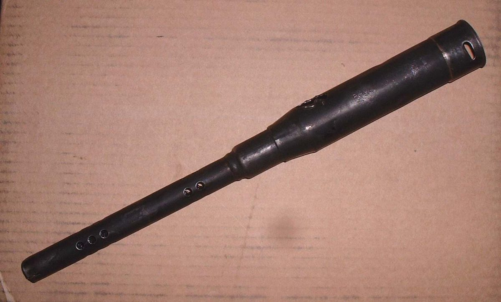
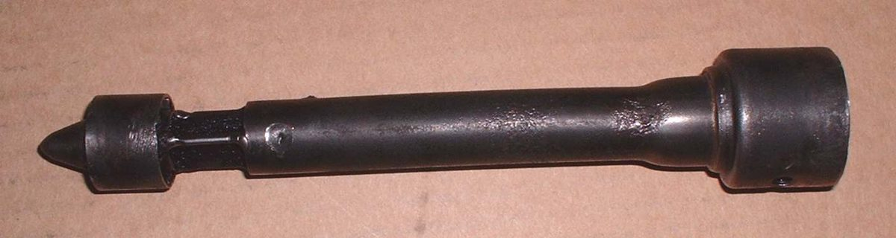
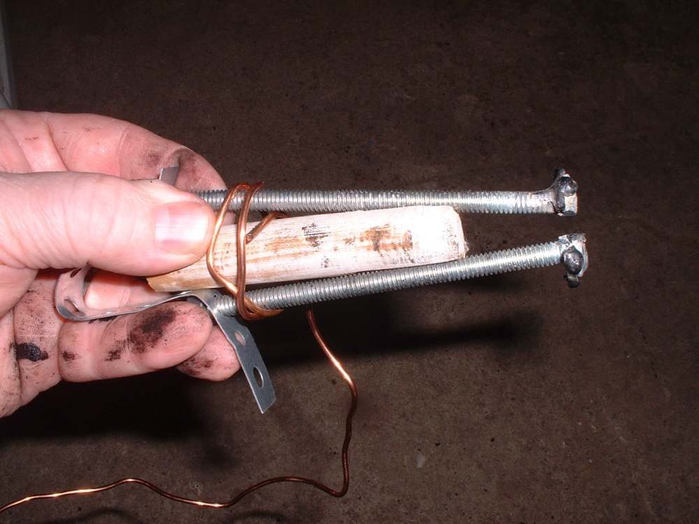
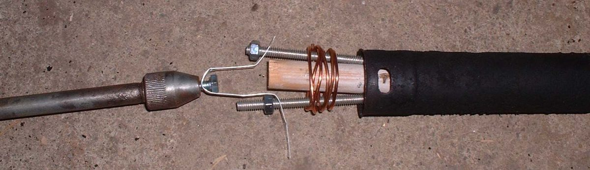

Photo: Dan's Motorcycle Repair Course (dansmc.com), used with permission.
Many two-stroke silencers have a spark arrester: a small perforated tube or baffle fitted in the outlet. Oil and carbon can glue it in place and block the gas flow. The engine then loses power and the exhaust may be hard to clear. The arrester is thin metal and bends or crumples easily, so pulling hard with pliers can ruin it. A simple expander tool gives a grip from the inside.
The method here suits a silencer that has an outlet insert. Some silencers have no removable part. In that case see Check a rusted silencer and choose a repair.
Safety
- Let the exhaust cool fully. Hot pipes burn.
- Wear eye protection and gloves. Carbon dust and oily soot are harmful to breathe and to skin. Work outdoors or with good airflow.
- Welding or grinding near a pipe that held fuel and oil can start a fire. Clean the pipe first and keep a fire extinguisher close.
- Never ride with the arrester removed and the silencer left blocked, and do not run the engine with the exhaust blocked.
You need
- Spanners to remove the silencer or pipe from the bike.
- Penetrating oil and a degreaser.
- For the expander: two bolts, a washer cut in half, a wooden dowel, soft wire, and a strap or small puller that hooks to a slide hammer.
- A bench vice to hold the pipe.
Steps
- Remove the silencer or pipe from the bike. Note how the pieces fit.
- Look into the outlet. If the arrester is in more than one part, take out the loose outer part first. Work gently and straighten small bends as you go.
- Soak the glued part with penetrating oil. Leave it for some time so the carbon softens.
- Make the expander. Weld a half washer to the head of each bolt. Place the bolts inside the ring of the arrester so the half washers catch its edge.
- Cut two grooves on opposite sides of the dowel. Push the dowel between the bolts so it spreads them against the arrester, and bind it with wire.
- Attach a strap or puller to the dowel assembly and pull. A slide hammer gives short, firm pulls that free the carbon without crushing the metal.
- When the part is out, scrape the carbon from the pipe and the arrester. Wash with degreaser and dry.
- Refit the arrester in the same position and refit the silencer. Use a new gasket or seal if the old one is damaged: Find and fix an exhaust leak.
Check your work
- You can see daylight through the arrester holes and the silencer bore.
- The arrester sits straight and is not bent.
- No exhaust leak at the joints after a short run.
If it did not fix the problem
- If the engine still loses power, carbon may also be in the exhaust port: Decarbonise a two-stroke exhaust and port.
- If the silencer is rusted through or the arrester is split, replace the part or go to a workshop.
- Related fault: Exhaust blocked or choked with carbon.